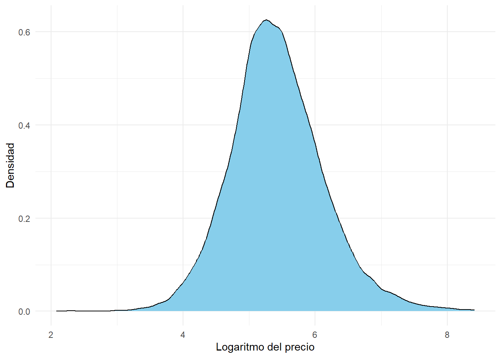
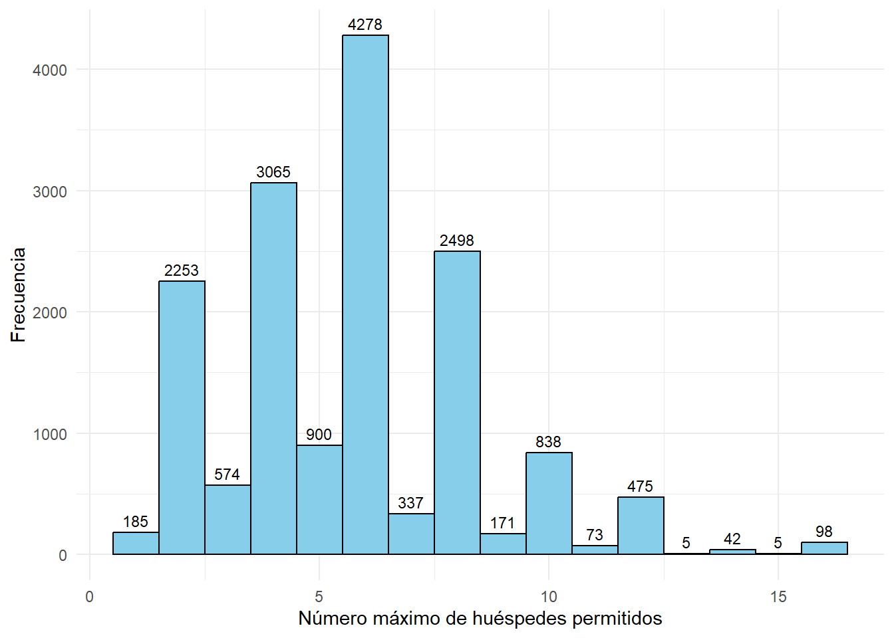
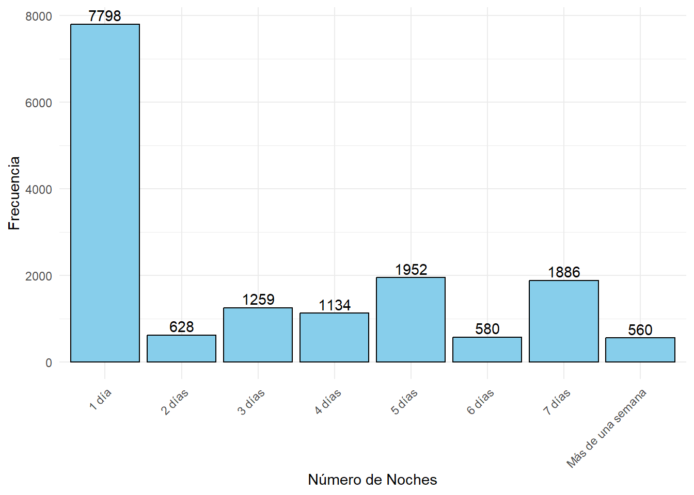
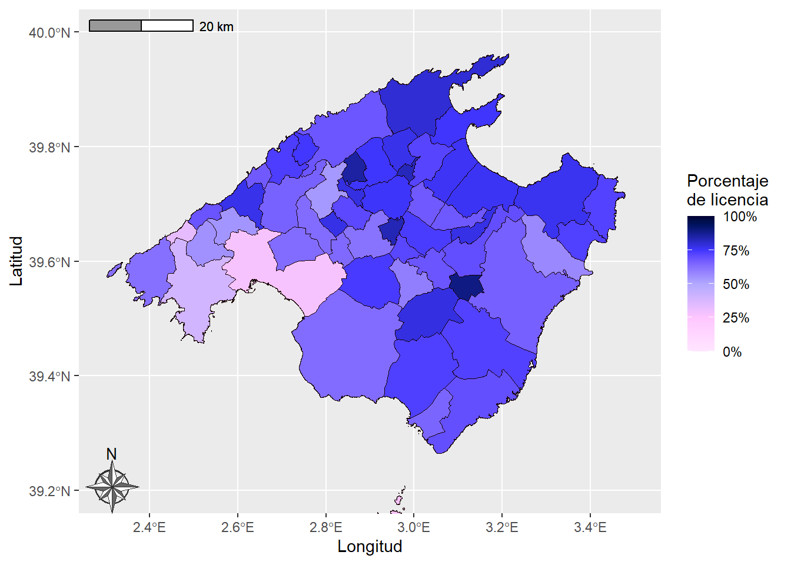

Rows: 15,797
Columns: 14
$ id <dbl> 69998, 106833, 159218, 166820, 168668, 168697, 80…
$ room_type <chr> "Entire home/apt", "Entire home/apt", "Entire hom…
$ accommodates <dbl> 2, 4, 3, 2, 4, 2, 6, 8, 7, 10, 4, 2, 6, 2, 2, 5, …
$ price <dbl> 100, 177, 160, 84, 180, 85, 230, 750, 222, 655, 2…
$ logprice <dbl> 4.605170, 5.176150, 5.075174, 4.430817, 5.192957,…
$ minimum_nights <dbl> 32, 5, 4, 1, 7, 7, 7, 3, 6, 4, 5, 1, 7, 3, 3, 5, …
$ availability_365 <dbl> 122, 2, 247, 75, 15, 103, 28, 122, 160, 226, 0, 1…
$ number_of_reviews <dbl> 263, 26, 377, 309, 64, 78, 5, 125, 54, 62, 82, 14…
$ review_scores_rating <chr> "Entre 4.75 y 5 estrellas", "Entre 4.75 y 5 estre…
$ license <dbl> 0, 1, 1, 0, 1, 0, 1, 1, 1, 0, 1, 0, 1, 1, 0, 1, 1…
$ longitude <dbl> 2.654640, 3.301000, 2.897450, 2.500520, 3.218450,…
$ latitude <dbl> 39.56987, 39.61458, 39.73839, 39.67894, 39.66654,…
$ NAMEUNIT <chr> "Palma", "Sant Llorenç des Cardassar", "Selva", "…
$ geometry <POINT [°]> POINT (2.65464 39.56987), POINT (3.301 39.6…Ánalisis descriptivo
Análisis descriptivo
Para este ejemplo, usaremos dos datasets. El primer dataset que llamaremos ‘pisos’, contiene los datos de las residencias que se alquilan en Mallorca desde la página web de Airbnb.
Por otro lado, el segundo dataset, que llamaremos ‘municipios’, contiene los datos de los municipios de España, incluyendo las fronteras entre los propios municipios.
Antes de nada, haremos una selección de las variables que usaremos para nuestro trabajo. Del dataset pisos consideramos las siguientes variables:
- id: Es un identificador para cada residencia
- room_type: Representa si el alojamiento es una habitación privada o una casa entera
- accomodates: Nos dice la cantidad máxima de huéspedes permitidos
- price: Es el precio del alojamiento en euros
- minimum_nights: Representa el mínimo de noches que has de hospedarte en la vivienda
- availability_365: Describe la disponibilidad (en días) para alquilar a lo largo de un año
- number_of_reviews: Proporciona el número de reseñas que le han hecho al alojamiento
- review_scores_rating: Representa la puntuación media de las reviews
- license: Nos dice si el dueño tiene licencia (1 si tiene, 0 si no)
- longitude: La coordenada de la longitud de la vivienda en grados
- latitude: La coordenada de la latitud de la vivienda en grados
Del dataset municipios usaremos dos variables:
- CODNUT3: Representa el código de la Nomenclatura de las Unidades Territoriales Estadísticas. El código ‘ES532’ es el que representa a la isla de Mallorca
- NAMEUNIT: Es el nombre del municipio
Como el dataset municipios, a efectos prácticos solo tiene una variable, fusionaremos los dos datasets en el dataset pisos, cogiendo las coordenadas de cada alojamiento y viendo en que municipio se encuentra. El resultado final es el siguiente.
Empezando el análisis, presentamos dos gráficas para resumir el comportamiento de las variables numéricas respecto de las variables cualitativas.
De lo primero que vamos a hablar son de las variables cualitativas que tenemos: room_type y license. Empecemos hablando de esta última. Vemos que aproximadamente un tercio de las residencias no tienen licencia, pero las que si tienen licencia suelen ser más caras. Esto puede ser debido a las garantías que ofrece el dueño de la vivienda para sus clientes.
| Licencia | Frecuencia absoluta | Frecuencia relativa (%) |
|---|---|---|
| 0 | 5075 | 32.13 |
| 1 | 10722 | 67.87 |
Por otra parte, el tipo de alojamiento más común es alquilar la vivienda entera. Menos de un 10% alquila solo una habitación privada. Además, como es lógico, las habitaciones privadas tienen un menor número máximo de huéspedes, como podemos ver en el histograma de la segunda gráfica, abajo a la izquierda. También se ve en el gráfico de la densidad que los alquileres que alquilan la vivienda entera son más caros que los que solo alquilan una habitación privada. Esto vuelve a tener mucho sentido, ya que la vivienda entera suele disponer de más funcionalidades, como por ejemplo una cocina, un salón, una posible piscina, etcétera, por lo que es normal un aumento del precio.
| Tipo de alojamiento | Frecuencia absoluta | Frecuencia relativa (%) |
|---|---|---|
| Entire home/apt | 14487 | 91.71 |
| Private room | 1310 | 8.29 |
Hablando de los precios, vemos que la densidad del logaritmo del precio según el tipo de alojamiento o la licencia, parece seguir una distribución normal. Para verlo más claro veamos la densidad del logaritmo del precio.

Resalta a la vista el parecido a la distribución normal, pero ya lo comprobaremos mediante un test de normalidad. Por ahora veremos las medidas de tendencia central del logaritmo del precio.
| Mínimo | 1er Cuartil | Mediana | Media | 3er Cuartil | Máximo | |
|---|---|---|---|---|---|---|
| Valor | 2.079442 | 4.976734 | 5.384495 | 5.422797 | 5.843544 | 8.411833 |
Pasando a hablar sobre el número de huéspedes, los histogramas de estas gráficas nos vislumbran que algo raro pasa con la variable accomodates. Parece ser que hay picos en los números de huéspedes pares. Vamos a verlo bien con un histograma más grande.

Esto puede ser debido a que se piense en temas familiares, como tener un sitio donde alojar a tu pareja o a tu familia. Vemos que lo más común es que se acepten como máximo a 6 huéspedes, seguido de residencias donde se acepten hasta a 4 huéspedes. Aquí pueden vivir por ejemplo una pareja con uno o dos hijos.
Nos quedan dos variables de las que hablar: minimum_nights y number_of_reviews. Estas dos variables tienen unos rangos de valores muy dispares, agrupados sobre todo en números pequeños. Esto lo podemos deducir por las densidades de las gráficas, que se ve un pico al principio. Para verlo más claro, proporcionamos estas tablas.
| Mínimo | 1er Cuartil | Mediana | Media | 3er Cuartil | Máximo | |
|---|---|---|---|---|---|---|
| Valor | 1 | 1 | 2 | 3.899411 | 5 | 365 |
| Mínimo | 1er Cuartil | Mediana | Media | 3er Cuartil | Máximo | |
|---|---|---|---|---|---|---|
| Valor | 0 | 1 | 7 | 22.66025 | 25 | 1877 |
Como eran distribuciones asimétricas por la derecha, se podía prever que la media sería mayor a la mediana. Aun así, de esta forma no podemos extraer mucha información, por lo que agruparemos los datos para sacar conclusiones.

Ahora vemos claramente que lo más normal es que el número mínimo de noches que hay que alquilar la residencia es de 1 día. Esto seguramente sea para ofrecer más flexibilidad al cliente además de no limitar su domicilio a ofertas más restrictivas. Tener que residir mínimo 5 o 7 días se deba a los alojamientos vacacionales, que tienen una clientela más familiar y permite que tengan de un hogar provisional durante la estancia.
Finalmente quiero destacar la alta correlación lineal entre el logaritmo del precio y el número máximo de huéspedes. Es positiva, en concreto de 0.681, y es muy significativa, por lo que nos puede indicar que la base del modelo sea un modelo de regresión lineal. Además implica algo que ya pensábamos: que cuantos más huéspedes se puedan hospedar, más costará el alquiler. El resto de correlaciones muy significativas son negativas y no son muy grandes. La más grande de estas es la correlación entre el número de huéspedes y el número de reseñas, de -0.188, lo cual es raro ya que en principio si tienes más huéspedes te tendrían que poner más reseñas.
Mapas


